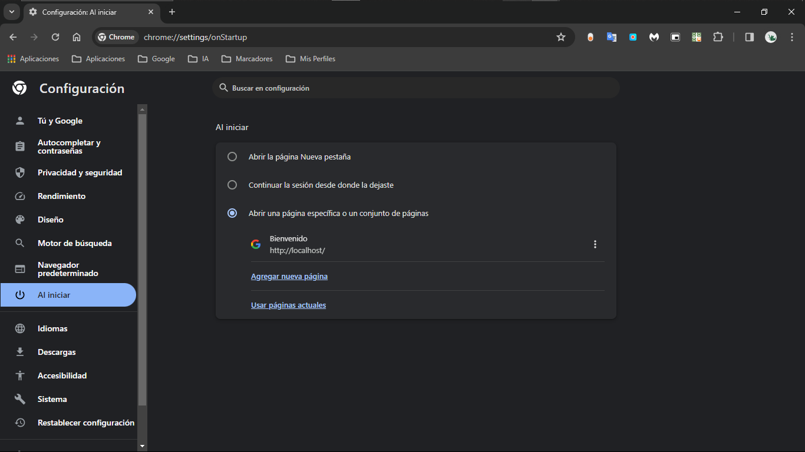

Página Principal Google Chrome
Este proyecto fue realizado por BryanGuevara como una forma para poder personalizar su página de inicio de Google Chrome, la idea es tener los links de las páginas web que frecuenta en la página principal, de forma ordenada.
El Proyecto tiene actualmente
-
Index
Un Index que te da la bienvenida, aquí se encuentran 5 enlaces, por el momento todas apuntan hacia Jugar.
-
Redes Sociales
Se encontrarán enlaces para mis redes sociales, por ejemplo:
-
Jugar
Se encuentran enlaces para distintas páginas de juegos, por ejemplo:
- Chess.com
- Gamesfrog
- SM4J
- Albion Online
- Roms en Español
Paginas para jugar en linea:
Paginas para descargar juegos de pc:
Paginas para descargar Roms de Emuladores:
-
Navegar
Se encontrarán enlaces para navegar, por ejemplo:
-
Hablar con una AI
Se encontrarán enlaces para distintas páginas de AIs, por ejemplo:
-
Frases Motivacionales
200 Frases con temas variados, como Programación, Biblia, Videojuegos, etc.
-
Fondos Personalizados
Sistema Randomizador para poner una imagen cada que se carga la página. Por el momento, tiene mis 20 fondos de la página de bloqueo, pero para la versión final tendrá muchos y variados.
Imágenes y video de cómo implementar
Video de cómo activar el IIS
Sigue hasta el minuto 5:26, porque el resto del video es para una app web de C# ASP.NET Core 6, y aquí ya lo tienen todo; no necesitan esos pasos.

Cómo Implementarlo
Implementarlo es muy fácil. En la carpeta "wwwroot" o en la carpeta que hayan creado en el inetpub, colocan todo lo de este repositorio, excepto lo siguiente:
- .git/
- .gitignore/
- markdown/
- README.md
Cómo activarlo en Chrome
Para poder implementar mi proyecto en Chrome, ve a Ajustes/Al Iniciar, activa "Abrir una ventana específica o Conjunto de Ventanas", haz clic en "Agregar nueva Página" y pones el link "http://localhost/".
(Si lo pusiste en otro puerto, tendrás que añadirle el puerto "http://localhost:80/" como puerto por defecto; viene por defecto en el 80).
Licencia Pública General de GNU, versión 3 (GPLv3)
Este trabajo está sujeto a los términos y condiciones de la Licencia Pública General de GNU, versión 3.
Texto completo de la Licencia Pública General de GNU, versión 3: GPLv3
BryanGuevara